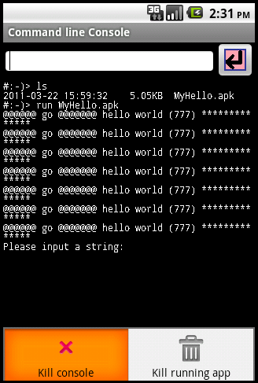

| Console
GUI |
(i)
to forward user input to
command dispatcher or the currently running custom console app, (ii) to print output from currently running custom console app |
| Command
dispatcher |
Run on
its own thread and (i) if user issue an internal command (e.g. 'ls', 'cd', 'del', etc), forward it to appropriate module to execute (ii) if user want to run an external console app, ApkRunner is launched to execute it. When executing an external console app, this thread acts as an agent to accept output from external console app then forward to Console GUI and also accept input from Console GUI then foward to the external console app. |
| ApkRunner |
Run on
its own thread and bring
up the custom console app to run |
 |
 |
|
| Console running built-in commands |
Console running a 3rd party app |
 button; and finally below is
the area like normal console to output text.
button; and finally below is
the area like normal console to output text.| 1 |
Create
a project using android
SDK script: > android create project \ --target 3 \ --name MyHello \ --path ./MyHello \ --activity MyHelloActivity \ --package com.xyz.testhello |
| 2 |
The
Activity class is useless.
Just delete it. |
| 3 |
Comment
out the whole
"application" tag in "AndroidManifest.xml" as they are useless, too: <!-- <application android:label="@string/app_name" android:icon="@drawable/icon"> <activity android:name="dummy" android:label="@string/app_name"> <intent-filter> <action android:name="android.intent.action.MAIN" /> <category android:name="android.intent.category.LAUNCHER" /> </intent-filter> </activity> </application> --> |
| 4 |
Create
a class, say 'MyHello',
with a static method "main(HashMap<Integer, Object> args)" and
use the 'CmdApp' to initialize the arguments passed in: package com.xyz.testhello; import java.util.HashMap; import com.sss.consolehelper.CmdApp; public class MyHello { public static void main(HashMap<Integer, Object> args) { CmdApp cmdApp = new CmdApp(args); ... .. .. // write your program here . } } The 'args' passed in is a hash table (constructed inside ApkRunner before calling 'main') containing some environment variables useful to a console app. Please see appendix for the content of the hash table. The 'CmdApp' is a helper class, provided in the sample console apps, to retrieve the content inside 'args' and provide convenient functions (like reading a line from stdin) to access and use the content. After initializing 'CmdApp', just write your console program as usual. |
| 5 |
Delete
all unnecessary resource
files inside "res". Create a file "res/raw/entrypoint.txt" with the following single-line content: com.xyz.testhello.MyHello This states the class which has the entry point function "main". |
| 6 |
Inside
'build.properties' at the
project root, add this line source.dir=src:../_consolehelper_src It is the root path where com.sss.consolehelper.CmdApp resides, thus, CmdApp can be found and built later on. |
| 7 |
Compile
the project by: > ant debug |
| 8 |
Put
the resultant "apk" file to
anywhere of the file system in the emulator/phone. I usually happen to
put it at the root of the SD card. To put it there, just type: > adb push MyHello.apk /sdcard/MyHello.apk |
| 9 |
Launch
CmdConsole app and run
the apk as: > run /sdcard/MyHello.apk or > cd /sdcard > run MyHello.apk |
| Kill
running app |
Actually,
this option only sends
a java.lang.InterruptedException to the running app and so this does
not ensure the running app can be killed. The 'InterruptedException'
only breaks out functions like 'wait', blocking 'read', 'sleep' and
'join'. If the running app does not hang on one of these functions or the app has a try-catch statement that catches all exceptions, this option can't break your 3rd party app. |
| Kill
console |
This
one will call
'android.os.Process.killProcess' to kill CmdConsole itself |
| args.get(0) | android.app.Application |
application context |
| args.get(1) | String[] |
array
of command line arguments; the 0th element is the start of arguments
(which is *NOT* the program name); may be null if no arguments |
| args.get(2) | java.io.InputStream
|
act as stdin for the console program |
| args.get(3) | java.io.PrintStream |
act as stdout for the console program |
| args.get(4) | String | specifies the
stream (stdin/stdout) encoding, which is "UTF-8" at present |
| help ls pwd cd clear run history del mkdir ren cp cleardex ver sres netinfo fontsize exit |